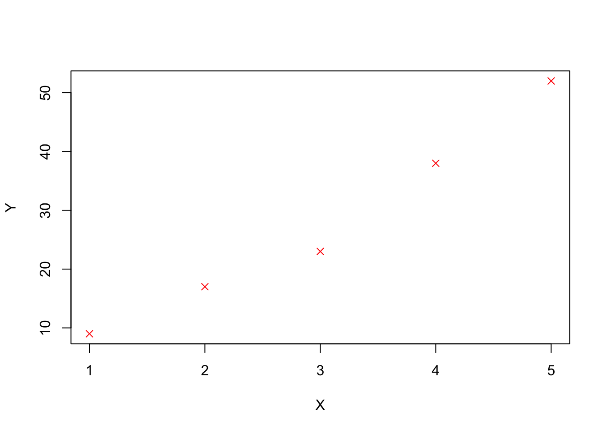

Week 2 – Introduction to R and RStudio
Aims
- To demonstrate the ways in which R can store data
- To show how R functions can operate on such data
Learning objectives
- Learn about the functions of the various panes in Rstudio
- Introduce the concept of vectors and the types of data that they can hold
- Present the different ways that a user can access documentation in R and when to use them
- Demonstrate the basic format for using an R function
- Teach some simple but useful functions in R
Our first look at the R language
Our overall goal for this course is to give you the ability to import your data into R, select a subset of the data most of interest for a given analysis, carry out an analysis to summarize these data and create visualizations of the data. First though, let us consider “What is Data?”
Data comes in many forms: Numbers (Integers and decimal values) or alphabetical (characters or lines of text). Clearly a computer (or R) needs a way of representing this wide range of data with it’s diverse properties.
The pigeon-hole analogy:- R stores data in contiguous sections of computer memory a bit like the pigeon-holes used in many internal mail systems. These holes are indexed e.g by 1st letter of surname or a range of letters e.g. A-C. Internal mail systems can carry different types of traffic small notes, large envelopes or parcels with different dimensions so there may be rows associated with small letters, big letters and parcels. For a system like this it makes sense that a row contains the same type of mail with similar dimensions to avoid wasting space.
Storing our first R data value
R has an equivalent to this called a Vector – everything is represented as a vector. For example say we had a single numerical value 8 and this was the number of samples in an experiment – an R vector can be created (or assigned) thusly:
samples <- 8The <- is the assignment action and
samples is the name of our vector.
If we just type samples followed by the return key R
will print the contents of the vector called samples (Try it). Notice
that Rstudio tries to help us by autocompleting the variable name to
avoid mis-typing.
Be kind to yourself and use meaningful names for your vectors like
samples rather than s. When you come back to
your code after 6 months or give it to colleagues it will be more
obvious what your program is doing and how it works. Also, note that the
variable Samples is different to the variable samples (Case
matters).
samples <- 8
Samples <- 24
samples## [1] 8Samples## [1] 24What if we found out that there were actually 12 samples? We can correct this by re-assigning the value of samples:
Now try outputting the value – is it 12 or 8?
samples <- 12Of course our data is often a decimal value e.g.
ph <- 5.5Or we may have a name e.g. a string of characters.
drug <- "Gefitinib"A less obvious type of data (but incredibly useful later on in this
course) are logical values i.e. TRUE and
FALSE.
yes <- TRUE
no <- FALSE
yes## [1] TRUEno## [1] FALSEStoring more than one value
We are much more likely to want to store a series of data e.g. observation values. Vectors can take any number of values but the assignment statement changes slightly.
obs <- c(2, 5, 8, 5, 8, 2)
obs## [1] 2 5 8 5 8 2vulcan <- c(TRUE, FALSE, !TRUE, !FALSE)
vulcan## [1] TRUE FALSE FALSE TRUEWhat happens when you ask R to print obs?
Note that with the logical vector we can use the
! operator to negate (or NOT) a logical
i.e. !TRUE is equal to FALSE.
Calculations can also be included in assignments e.g. we might have a column supplied in one type of units and we need it in another.
new_obs <- obs * 2.2
new_obs## [1] 4.4 11.0 17.6 11.0 17.6 4.4smaller <- samples / 2
smaller## [1] 6Notice that each and every element of the vector has been
multiplied by 2.2. This is what was happening when we used
1:36 * 2 earlier.
Here are some more arithmetic operators you’re likely to come across.
| Symbol | Effect |
|---|---|
| + | Addition |
| – | Subtraction |
| * | Multiplication |
| / | Division |
| ^ | Exponent |
| %% | Modulus (Remainder) |
| %/% | Integer Division |
Note that when applying arithmetical functions to vectors they must be appropriate. For example, if you try and add 3 to the character string “a” then R will quite rightly return an error message.
> "a" + 3
Error in "a" + 3 : non-numeric argument to binary operatorSimilarly, we can have long vectors of text strings:
animals <- c('cat', 'dog', 'mouse')
drugs <- c('Gefitinib', 'FCR', "Vincristine")
bases <- c("c", "g", "t", "a", "n")What happens if you print these?
Our first R function – help
Functions are like mathematical functions they take argument(s) and return a result and the arguments are enclosed in brackets i.e. \(Y = F(X)\)
They extend the capabilities of R. A function that you will find most ‘helpful’ is the help() function. It provides help on the topic that is supplied as the argument.
Try
help(help)The result appears in the bottom right-hand pane.
Notice how Rstudio tries to help you by suggesting what the arguments
could be (in floating yellow text box). Need more help? You can
also use ??help.
If you know roughly what you need but not the actual function name
use ?? e.g. ??average.
What if you know the function name but can’t recall what the
arguments are? Try args() function
e.g. args(plot.default).
More useful functions
length() to find out how many elements
are in a vector
length(animals)## [1] 3class() will tell you the class
(suprise) of a vector e.g. character or numeric
class(animals)## [1] "character"class(obs)## [1] "numeric"str() reports the structure of an
object. This terse report includes such useful information as class,
index range of elements e.g. 1..n and the values contained therein. The
same output can be seen for each object in the Environment pane in the
top right-hand pane.
str(obs)## num [1:6] 2 5 8 5 8 2typeof() - reports how object is stored
e.g. character, integer, double or logical. If we explicitly want a
vector to be integer-only we can use another function
as.integer() or a suffix of
L when we assign it (see below).
?typeof
samples## [1] 12typeof(samples)## [1] "double"hint <- 5L
hint2 <- as.integer(25)
hint## [1] 5typeof(hint)## [1] "integer"hint2## [1] 25typeof(hint2)## [1] "integer"drug## [1] "Gefitinib"typeof(drug)## [1] "character"So what does R mean by these types and why would we use one over another? What does R have to tell us on this topic?
?integer?double?characterInteger - whole discrete numbers e.g. numbers of mice, cell counts.
Double - continuous decimal values e.g. specific activity or a voltage reading.
Character - A string of one to N alphanumeric characters e.g. a drug name.
Factor - A new one. Categorical values that may or may not have any heirachical order e.g. drug1, drug2, drug3. We would use these to seperate data e.g. when plotting. More about factors later in the course.
Computational aspects of these types relate to space required to store the value (number of bytes) and speed at accessing the value. Order of lowest to highest is typically: integer, double and character. However, unless you are dealing with huge quantities of data or lots of processing, this is unlikely to affect your programs.
Important - you can only store one type of data in any one vector i.e. all logical or all character etc. If you mix them, R will store them in the lowest common denominator of type in order to preserve as much information as possible about the value.
summary() - one of my
favourite functions. R gives an object summary of the
vector. this means that what is returned depends on the vector. I often
use it on data after I have read it in from a file to do a ‘sanity
check’ and find maximum and minimum values etc to spot unexpected (and
possibly erroneous) values.
summary(obs)## Min. 1st Qu. Median Mean 3rd Qu. Max.
## 2.00 2.75 5.00 5.00 7.25 8.00So-called ‘Base’ R does possess plotting functions. However, later lessons will teach you how to plot using a much more powerful and easy-to-use tidyverse package called ggplot2.
Just to demonstrate a function with multiple parameters, I will use base R plot here. Once you have read in your data you may wish to do a quick & dirty plot it e.g. to spot any trends or outliers. This can be done quickly in R (but much finer control in ggplot2).
X <- c(1,2,3,4,5)
Y <- c(9, 17, 23, 38, 52)
plot.default(X, Y, pch = 4, col = "red")
A point to note here - In the help you will notice
that parameters are usually presented in a specific order in the
brackets. This will work fine, but you may wish to take default values
or enter parameters out of order. You can do this by using a parameter
name e.g. the plot character is called ‘pch’ and we can put
pch = N anywhere between the brackets. However, just
because you can is not a good reason. Doing things out of order for no
reason can make your code less readable.
Summary
In this session we have covered the following concepts:
- The Rstudio environment and the functions associated with each pane
- Using the RStudio console as a calculator and place to test out R code
- Storing a single item of data in an R vector
- Storing multiple items of data in an R vector
- Arithmetic operators and applying them to R vectors
- Calling functions in R
- Many different ways of getting help within R
- Learning about the different types of vector in R (integer, double, character)
- Further details on how we can supply parameters to an R function
We also cover how to work within an R markdown document and run code therein in this week’s assignment.
Assignment
Assignment: assignment1.Rmd
Solutions: assignment1_walkthrough.Rmd and assignment1_solutions.html